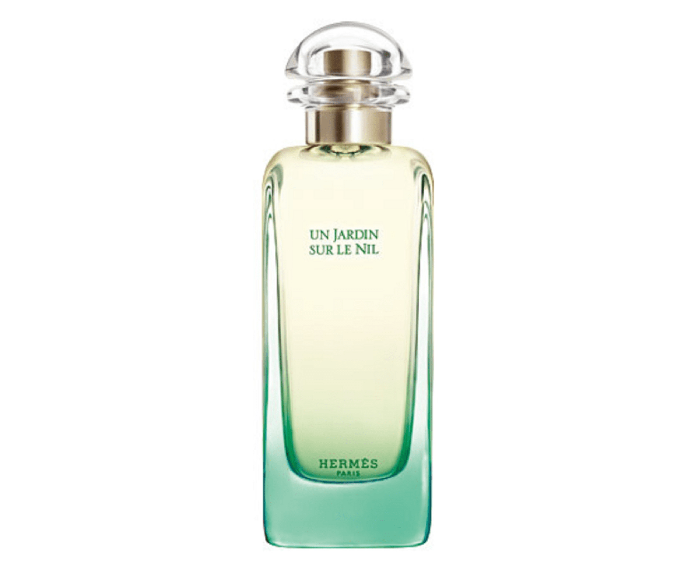

エジプトのナイル川に浮かぶ島々をイメージしたこの香りは、単なるシトラスではありません。トップノートで弾ける「グレープフルーツの皮の苦味」と、瑞々しいグリーンマンゴーの調和が……
（中略：ここにCSVから抽出した生の口コミや、あなたの分析をたっぷり入れます）
後半にかけて現れるウッディな落ち着きは、まさに「大人のための清涼感」。仕事中のリフレッシュにも最適です。

エジプトのナイル川に浮かぶ島々をイメージしたこの香りは、単なるシトラスではありません。トップノートで弾ける「グレープフルーツの皮の苦味」と、瑞々しいグリーンマンゴーの調和が……
（中略：ここにCSVから抽出した生の口コミや、あなたの分析をたっぷり入れます）
後半にかけて現れるウッディな落ち着きは、まさに「大人のための清涼感」。仕事中のリフレッシュにも最適です。
この香りをCOLORIAで1,980円から試す